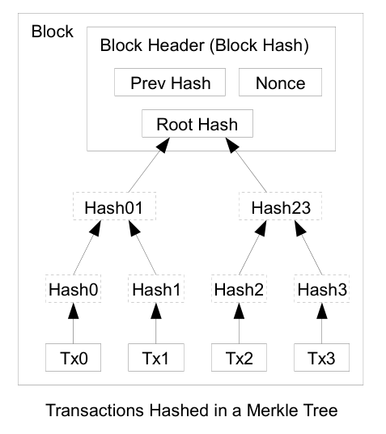
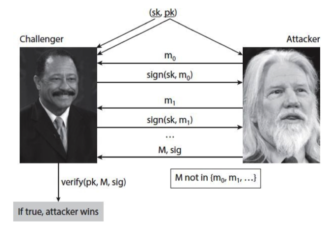
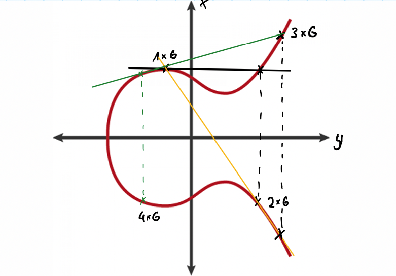
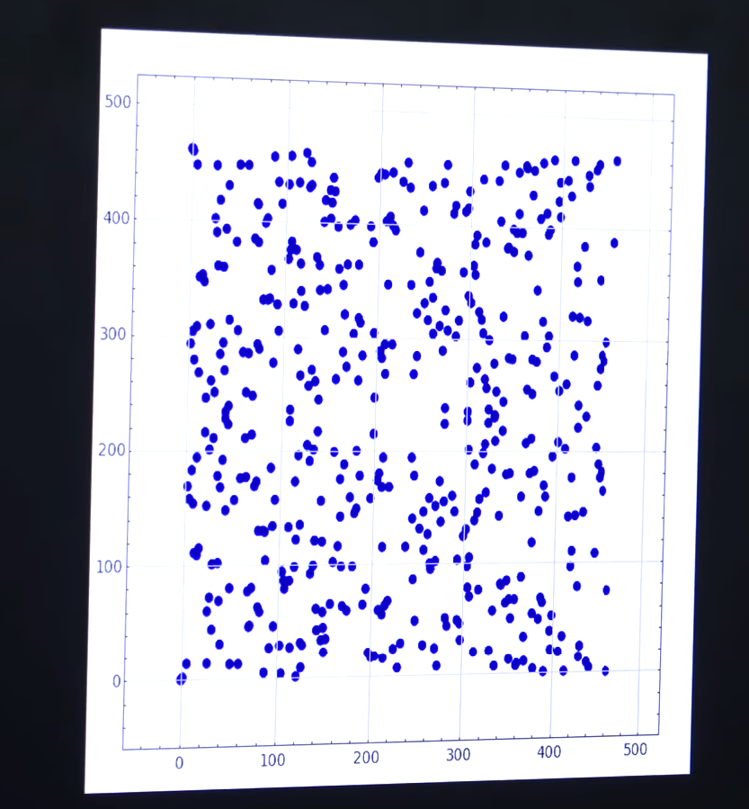

3. Security Aspects and Technical Fundamentals of Blockchain Technology #
Core idea of blockchain technology:
Create a decentralized transaction system
Enable transactions between parties (agents)
Eliminate the need for intermediaries
Remove reliance on trusted third parties [Narayanan et al., 2016]
How to achieve blockchain technology:
Mathematical models take over all the functional foundations of blockchain technology.
Mathematical models that enable cryptographic encryption based on computability and complexity take on the tasks of an intermediary.
The system itself distributes these tasks to all agents in the system, even if they receive a task that is not related to their own transactions. [Narayanan et al., 2016]
It is replaced as follows:
The Object |
Centralized FIAT Object |
Blockchain |
|---|---|---|
The Storage of Value |
Bank Account / Physical Wallet |
Public + Private Key linked to realized and unspent transactions held by all participants in the system |
Transaction |
(Digital) Transaction through trustee (middleman) or physical handover between parties |
Publishing that an object has a new owner by its current owner to the whole system through a cryptographic signature |
Identity Verification |
Governmental ID cards, passwords, various authentication methods |
Decentralized identifiers (DIDs), cryptographic proofs, and blockchain-based identity verification |
3.1. Cryptographic Hash Functions#
Because the concept of blockchains is built on different aspects of computation theory, cryptography, and distributed computing, we will start with the core aspects that form a blockchain and begin with the cryptographic hash functions.
This is a more uncommon approach in science, but we want to first define what properties our hash functions must hold so they can be used in common blockchains, and we will understand the “Why?” later when everything comes together. [Narayanan et al., 2016]
3.1.1. Computation#
Computational Property 1: Input Flexibility
The input can be any string of any size. [Narayanan et al., 2016]
Computational Property 2: Fixed-Sized Output
The function produces a fixed-sized output.
For this discussion, a 256-bit output size is assumed, but the property holds for any sufficiently large output size. [Narayanan et al., 2016]
Computational Property 3: Efficient Computability
The hash function is efficiently computable, meaning that for a given input string, the output can be determined in a reasonable amount of time.
Technically, computing the hash of an n-bit string should have a running time of O(n). [Narayanan et al., 2016]
3.1.2. Cryptography#
Cryptographic Property 1: Collision Resistance
Definition: A hash function \( H \) is said to be collision resistant if it is infeasible to find two values, \( x \) and \( y \), such that \( x \neq y \), yet \( H(x) = H(y) \). [Narayanan et al., 2016]
Why we need this?
We need collision resistance to ensure that it is infeasible to find two different inputs that produce the same hash output.
This is crucial for maintaining data integrity and preventing forgery. [Narayanan et al., 2016]
Example:
When a transaction is created, it is hashed to produce a transaction ID.
If an attacker could find two different transactions that produce the same hash (collision), they could potentially replace a legitimate transaction with a fraudulent one without being detected.
This would undermine the integrity of the blockchain. [Narayanan et al., 2016]
Cryptographic Property 2: Hiding
Definition: A hash function \( H \) is said to be hiding if, when a secret value \( r \) is chosen from a probability distribution that has high min-entropy, then, given \( H(r \parallel x) \), it is infeasible to find \( x \). [Narayanan et al., 2016]
Why we need this?
We need the hiding property to ensure that given a hash output, it is infeasible to determine the original input.
This is essential for preserving the confidentiality of the input data. [Narayanan et al., 2016]
Example:
The hiding property ensures that the nonce and other block header data cannot be easily deduced from the hash output.
Maintains the difficulty and security of the mining process. [Narayanan et al., 2016]
Cryptographic Property 3: Puzzle Friendliness
Definition: A hash function \( H \) is said to be puzzle friendly if for every possible \( n \)-bit output value \( y \), if \( k \) is chosen from a distribution with high min-entropy, then it is infeasible to find \( x \) such that \( H(k \| x) = y \) in time significantly less than \( 2^n \). [Narayanan et al., 2016]
Why we need this?
Puzzle friendliness ensures that solving the hash function requires a brute-force search.
Prevents shortcuts and maintains the security of cryptographic protocols. [Narayanan et al., 2016]
Example:
In Bitcoin mining:
Miners must find a nonce such that the hash of the block header concatenated with the nonce produces a hash with a certain number of leading zeros.
Puzzle friendliness ensures there are no shortcuts to finding this nonce.
Maintains the difficulty and security of the mining process. [Narayanan et al., 2016]
3.2. Hash Pointers#
The next thing we need are so called Hash Pointers. Imagine a Linked List
from linked_list import LinkedList
ll = LinkedList()
ll.append("Beta")
ll.append("Alpha")
ll.append("Delta")
ll.append("Gamma")
ll.print_list()
Beta -> Alpha -> Delta -> Gamma -> None
Problem: Ensuring Static Linkage of Values
We need to ensure that values are statically linked together.
We want to make sure that we cannot change any value in the middle of the linked list without changing every value before the changed one.
Solution: Hash Pointers
Hash Pointers connect a hash of the previous node’s data to the current node.
Any change in the data of a node will affect the hash, and thus the hash pointer in the next node.
This creates a chain reaction, ensuring data integrity.
Visualization:
Imagine a linked list where each node contains:
Data
Hash Pointer to the previous node’s data
Changing the data in any node will:
Change the hash of that node
Change the hash pointer in the next node
Continue affecting all subsequent nodes
from linked_list import HashLinkedList
hll = HashLinkedList()
hll.append("Beta")
hll.append("Alpha")
hll.append("Delta")
hll.append("Gamma")
hll.append("Zeta")
hll.append("Omega")
print("Original List:")
hll.print_list()
hll.visualize()
Original List:
Data: Beta, Hash: 703390318bd55aef50b7823d2b90a846debff99e6e3d401a24a921b733912a6d, Prev Hash:
Data: Alpha, Hash: 9517f7b5d2664f38da15735d8f2a44407c8de29d1e1d488d10b9275d0fd3604b, Prev Hash: 703390318bd55aef50b7823d2b90a846debff99e6e3d401a24a921b733912a6d
Data: Delta, Hash: b09121c00f7dacaf6e4e234fe340f71fa28d894393f4e5f78fab5a585ea5147f, Prev Hash: 9517f7b5d2664f38da15735d8f2a44407c8de29d1e1d488d10b9275d0fd3604b
Data: Gamma, Hash: d6e8a5f5e135051299749acc19d6ef182fe246f6440e6f7daad29e0ee8a3ce73, Prev Hash: b09121c00f7dacaf6e4e234fe340f71fa28d894393f4e5f78fab5a585ea5147f
Data: Zeta, Hash: 009b9901cdc0dd709c4e345fc750cb31b95c9e4fb79d12d89a58fb1de3926ffd, Prev Hash: d6e8a5f5e135051299749acc19d6ef182fe246f6440e6f7daad29e0ee8a3ce73
Data: Omega, Hash: 51ee1c31e1301e451649b629c4cc06f4f29fe48909c73bf009d412a873ccfbcc, Prev Hash: 009b9901cdc0dd709c4e345fc750cb31b95c9e4fb79d12d89a58fb1de3926ffd
Data: Beta
Hash: 70339031...
Prev Hash: ...
Data: Alpha
Hash: 9517f7b5...
Prev Hash: 70339031...
Data: Delta
Hash: b09121c0...
Prev Hash: 9517f7b5...
Data: Gamma
Hash: d6e8a5f5...
Prev Hash: b09121c0...
Data: Zeta
Hash: 009b9901...
Prev Hash: d6e8a5f5...
Data: Omega
Hash: 51ee1c31...
Prev Hash: 009b9901...
hll.manipulate_data("Delta", "DeltaModified")
print("\nList after manipulating 'Delta':")
hll.print_list()
hll.visualize()
List after manipulating 'Delta':
Data: Beta, Hash: 703390318bd55aef50b7823d2b90a846debff99e6e3d401a24a921b733912a6d, Prev Hash:
Data: Alpha, Hash: 9517f7b5d2664f38da15735d8f2a44407c8de29d1e1d488d10b9275d0fd3604b, Prev Hash: 703390318bd55aef50b7823d2b90a846debff99e6e3d401a24a921b733912a6d
Data: DeltaModified, Hash: 21185a34b6ad429fbc23a71cdf7cecf19b81dc3938159b759b01d9a5dcff6b64, Prev Hash: 9517f7b5d2664f38da15735d8f2a44407c8de29d1e1d488d10b9275d0fd3604b
Data: Gamma, Hash: d6e8a5f5e135051299749acc19d6ef182fe246f6440e6f7daad29e0ee8a3ce73, Prev Hash: b09121c00f7dacaf6e4e234fe340f71fa28d894393f4e5f78fab5a585ea5147f
Data: Zeta, Hash: 009b9901cdc0dd709c4e345fc750cb31b95c9e4fb79d12d89a58fb1de3926ffd, Prev Hash: d6e8a5f5e135051299749acc19d6ef182fe246f6440e6f7daad29e0ee8a3ce73
Data: Omega, Hash: 51ee1c31e1301e451649b629c4cc06f4f29fe48909c73bf009d412a873ccfbcc, Prev Hash: 009b9901cdc0dd709c4e345fc750cb31b95c9e4fb79d12d89a58fb1de3926ffd
Data: Beta
Hash: 70339031...
Prev Hash: ...
Data: Alpha
Hash: 9517f7b5...
Prev Hash: 70339031...
Data: DeltaModified
Hash: 21185a34...
Prev Hash: 9517f7b5...
Data: Gamma
Hash: d6e8a5f5...
Prev Hash: b09121c0...
Data: Zeta
Hash: 009b9901...
Prev Hash: d6e8a5f5...
Data: Omega
Hash: 51ee1c31...
Prev Hash: 009b9901...
This structure called tamper-evident log is secure against manipulation and hold the following properties:
Tamper Evidence: Any change in the data can be detected.
Integrity: The integrity of the data is maintained as long as the hash pointers are intact.
However, this structure alone is not sufficient for a full-fledged blockchain with transactions due to the following reasons:
Efficiency in Verification: Verifying the integrity of a single block requires traversing the entire chain from the head to the block in question. This can be inefficient for large blockchains.
Proof of Membership: Proving that a particular transaction exists in the blockchain is not straightforward and requires traversing the entire chain.
Proof of Nonmembership: Proving that a particular transaction does not exist is even more complex and inefficient.
Merkle trees address these inefficiencies by providing a more structured and efficient way to verify data integrity and membership. [Narayanan et al., 2016]
3.3. Merkle Trees#
Efficient Verification: In a Merkle tree, each leaf node represents a data block (e.g., a transaction), and each non-leaf node represents the hash of its child nodes. The root of the tree is a hash that represents the entire dataset. Verifying the integrity of a single block only requires a logarithmic number of hash computations (log(n)), making it much more efficient than traversing the entire chain. [Narayanan et al., 2016]
from merkle_tree import merkleTree, visualizeTree
transactions = ['transaction1', 'transaction2', 'transaction3', 'transaction4']
tree = merkleTree()
tree.makeTreeFromArray(transactions)
tree.calculateMerkleRoot()
print("Merkle Root:", tree.getMerkleRoot())
print("\nTree Structure:")
visualizeTree(tree.root)
Merkle Root: 0cf77e26eb4a27047852cf39e3868c7a69ff1109acb9e799ba422d3ac350fb97
Tree Structure:
.: 0cf77e26eb4a27047852cf39e3868c7a69ff1109acb9e799ba422d3ac350fb97
L: 830b7f324af3ff2b2a47cf7cf5ac825fe8d8034294ea8e8f853a4d3fada893fc
L: bde4693e55a336ff81ab238ce20cae1dd9c8ba03b9b8f43963f5569bf3cf5229
R: 4beace8bdcf9b5b74630eaee2e7f501180e46025ca89b05e7e041fbe953d817a
R: 882ed7f97314e753d0084ea24c386afd3cbd0fb34b3744bfb81d9d3a925cc6e6
L: 293755ab6384e02d9202d483f2f0250100d786e75fdab1b6f3925b2800ece3cb
R: 2435dc0372e12b3f7684fb7093fbe6f6dee79dbff96cc28b1687839ef526e02f
3.4. Transaction Validation#
L: 830b7f324af3ff2b2a47cf7cf5ac825fe8d8034294ea8e8f853a4d3fada893fc
Should be:
Transaction 1:
bde4693e55a336ff81ab238ce20cae1dd9c8ba03b9b8f43963f5569bf3cf5229+
Transaction 2:
4beace8bdcf9b5b74630eaee2e7f501180e46025ca89b05e7e041fbe953d817a
Result:
Expected:
830b7f324af3ff2b2a47cf7cf5ac825fe8d8034294ea8e8f853a4d3fada893fc
from hash_functions import sha256_hash
def verify_merkle_tree():
txn1_hash = 'bde4693e55a336ff81ab238ce20cae1dd9c8ba03b9b8f43963f5569bf3cf5229'
txn2_hash = '4beace8bdcf9b5b74630eaee2e7f501180e46025ca89b05e7e041fbe953d817a'
expected = '830b7f324af3ff2b2a47cf7cf5ac825fe8d8034294ea8e8f853a4d3fada893fc'
combined_hash = sha256_hash(txn1_hash + txn2_hash)
print(f"Combined hash: {combined_hash}")
print(f"Expected: {expected}")
assert combined_hash == expected, f"Hash mismatch: {combined_hash} != {expected}"
verify_merkle_tree()
Combined hash: 830b7f324af3ff2b2a47cf7cf5ac825fe8d8034294ea8e8f853a4d3fada893fc
Expected: 830b7f324af3ff2b2a47cf7cf5ac825fe8d8034294ea8e8f853a4d3fada893fc
We can also prove that the negation is valid.
def verify_merkle_tree():
txn1_hash = 'bde4693e55a336ff81ab238ce20cae1dd9c8ba03b9b8f43963f5569bf3cf5228'
txn2_hash = '4beace8bdcf9b5b74630eaee2e7f501180e46025ca89b05e7e041fbe953d817a'
expected = '830b7f324af3ff2b2a47cf7cf5ac825fe8d8034294ea8e8f853a4d3fada893fc'
combined_hash = sha256_hash(txn1_hash + txn2_hash)
print(f"Combined hash: {combined_hash}")
print(f"Expected: {expected}")
assert combined_hash == expected, f"Hash mismatch: {combined_hash} != {expected}"
verify_merkle_tree()
Combined hash: ed16d3014e104c1dea31d8cf9d137daf0231f620b7c39bc291957f15e3ebda4d
Expected: 830b7f324af3ff2b2a47cf7cf5ac825fe8d8034294ea8e8f853a4d3fada893fc
---------------------------------------------------------------------------
AssertionError Traceback (most recent call last)
Cell In[6], line 12
9 print(f"Expected: {expected}")
10 assert combined_hash == expected, f"Hash mismatch: {combined_hash} != {expected}"
---> 12 verify_merkle_tree()
Cell In[6], line 10, in verify_merkle_tree()
8 print(f"Combined hash: {combined_hash}")
9 print(f"Expected: {expected}")
---> 10 assert combined_hash == expected, f"Hash mismatch: {combined_hash} != {expected}"
AssertionError: Hash mismatch: ed16d3014e104c1dea31d8cf9d137daf0231f620b7c39bc291957f15e3ebda4d != 830b7f324af3ff2b2a47cf7cf5ac825fe8d8034294ea8e8f853a4d3fada893fc
3.4.1. How does a Merkle Tree form to blocks in a blockchain?#
Important Practical properties Merkle Tree vs. Hashed linked lists:
Scalability: Merkle trees scale well with the size of the dataset. As the number of transactions grows, the depth of the tree increases logarithmically, maintaining efficient verification times.
Concise Proofs: Both membership and nonmembership proofs are concise and efficient, making them suitable for large datasets.
Parallelism: Merkle trees allow for parallel computation of hashes, which can speed up the process of building and verifying the tree. [Narayanan et al., 2016]
import requests
import hashlib
import random
def fetch_latest_block():
response = requests.get('https://blockchain.info/q/latesthash?cors=true')
return response.text.strip()
def fetch_merkle_root_and_transactions(block):
response = requests.get(f'https://blockchain.info/rawblock/{block}?cors=true')
data = response.json()
return data['mrkl_root'], [tx['hash'] for tx in data['tx']]
def to_bytes(hex_str):
return bytes.fromhex(hex_str)
def to_hex(byte_arr):
return byte_arr.hex()
def to_pairs(arr):
return [arr[i:i + 2] for i in range(0, len(arr), 2)]
def hash_pair(a, b=None):
if b is None:
b = a
bytes_combined = to_bytes(b + a)[::-1]
hashed = hashlib.sha256(hashlib.sha256(bytes_combined).digest()).digest()
return to_hex(hashed[::-1])
def merkle_proof(txs, tx, proof=None, steps=0):
if proof is None:
proof = []
if len(txs) == 1:
return proof, steps
tree = []
for pair in to_pairs(txs):
hash_val = hash_pair(*pair)
if tx in pair:
idx = pair.index(tx) == 0
proof.append((idx, pair[idx]))
tx = hash_val
tree.append(hash_val)
steps += 1
return merkle_proof(tree, tx, proof, steps)
def merkle_proof_root(proof, tx):
root = tx
for idx, tx in proof:
if idx:
root = hash_pair(root, tx)
else:
root = hash_pair(tx, root)
return root
def main():
latest_block = fetch_latest_block()
root, txs = fetch_merkle_root_and_transactions(latest_block)
tx = random.choice(txs)
# manipulate the transaction
# tx = tx.replace('0', '1')
proof, steps = merkle_proof(txs, tx)
block_size = len(txs)
print(f"Block size: {block_size}")
print(f"Steps taken: {steps}")
if merkle_proof_root(proof, tx) == root:
print(True)
else:
print(False)
if __name__ == "__main__":
main()
Block size: 4292
Steps taken: 4299
True
3.4.2. Why do we need Merkle Trees in blockchains?#
To cheaply (cheaply in the sense of computation) verify if a transaction existed/not existed in a block, which we can find out by checking if the merkle root is correct.
To check a transaction only need:
The merkle root
The hash of the transaction that you want to check.
Hashes of the sibling nodes along the path from the transaction hash to the merkle root [Narayanan et al., 2016]
3.4.3. Proof of Membership and Nonmembership#
Proof of Membership: To prove that a particular transaction is part of the blockchain, you only need to provide the transaction, its hash, and the hashes of its sibling nodes up to the root. This proof is concise and can be verified in logarithmic time.
Proof of Nonmembership: In a sorted Merkle tree, proving nonmembership involves showing the path to the items just before and after the position where the transaction would be. This proof is also efficient and can be verified in logarithmic time. [Narayanan et al., 2016]
3.5. Identities and Digital Signatures#
3.5.1. Identities#
Public Key: cryptographic key used to receive funds
derived from the private key and can be shared publicly
Private Key: cryptographic key used to sign transactions
must be kept secret and secure
Wallet Address: shorter, user-friendly form of the public key [Narayanan et al., 2016]
3.5.2. Digital Signatures#
Digital signatures are cryptographic mechanisms that provide a digital equivalent to handwritten signatures.
Properties:
Authenticity: Only the owner of the private key can create a valid signature.
Verification: Anyone with the corresponding public key can verify the authenticity of the signature.
Document Binding: The signature is tied to a specific document, preventing it from being reused on different documents. [Narayanan et al., 2016]
General Digital Signature Scheme:
generateKeys(keysize): Produces a pair of keys—a private key (sk) for signing and a public key (pk) for verification.
sign(sk, message): Uses the private key to generate a signature for a given message.
verify(pk, message, sig): Uses the public key to verify if a given signature is valid for the message. [Narayanan et al., 2016]
Security Properties:
Transaction Integrity: Digital signatures ensure that only the owner of a cryptocurrency can authorize transactions, preventing unauthorized spending.
Verification: Nodes in the network can verify transactions using the public key, ensuring the authenticity and integrity of transactions.
Security: The unforgeability property protects against fraudulent transactions, maintaining the trust and security of the cryptocurrency system. [Narayanan et al., 2016]
3.5.2.1. Unforgeability#
An attacker should not be able to forge signatures on messages that were not signed by the legitimate signer.
The unforgeability property is formalized through a game played between a challenger and an adversary. The challenger generates a key pair and gives the public key to the adversary.
 [Narayanan et al., 2016]
In the game, the adversary is allowed to request signatures on messages of their choice from the challenger, who uses the secret key to sign them. This models a real-world scenario where an attacker may see valid signatures on some messages.
After seeing some signatures, the adversary picks a message M that they will attempt to forge a signature on. The only restriction is that M must not be a message the adversary previously requested a signature for.
The adversary wins the game if they can produce a valid signature on M that verifies under the public key. The signature scheme is considered unforgeable if no adversary can win this game with a non-negligible probability.
For a signature scheme to be secure, it must be computationally infeasible for any adversary to win the unforgeability game, even if they can see signatures on other messages of their choosing.
3.5.2.2. Digital Signatures in Bitcoin#
Bitcoin Transaction Structure:
scriptSig: This is part of the transaction input and contains the digital signature and the public key. It proves that the transaction is authorized by the owner of the private key.
scriptPubKey: This is part of the transaction output and specifies the conditions under which the output can be spent. This includes the public key hash, which must match the public key provided in the scriptSig. [Narayanan et al., 2016]
Bitcoin Digital Signature Scheme:
Key Generation (Wallet creation): A user generates a private key and a corresponding public key.
Signing: When creating a transaction, the user signs the transaction data with their private key. This signature is included in the scriptSig.
Verification: Nodes in the Bitcoin network use the public key (included in the scriptSig) and the conditions specified in the scriptPubKey to verify the signature. If the signature is valid, the transaction is considered authentic and is added to the blockchain. [Narayanan et al., 2016]
3.5.2.3. Elliptic Curve Digital Signature Algorithm (ECDSA)#
A digital signature system allows you to generate your own private/public key pair. You can then use the private key to generate signatures that prove you are the owner of the public key, without having to reveal the private key.
ECDSA allows the owner of a private key to sign a transaction, providing proof that they authorize the Bitcoin transfer. Anyone can then verify this signature using the corresponding public key.
The intersection points look like they are randomly distributed.  [Pound, n.d.]
We intersect with only 1 point (never > 1)
Public Key is \(Q=xG\)
This is also known as a “trapdoor function” because it is easy to compute the public key from the private key, but infeasible to reverse the process.
Private Key is \(x\)
When you have the private key, you know exactly how many steps you have to take
When you only have the Public Key, you only have the end point.
So by guessing you have to try every of these steps & you don’t know how many steps to get there.

Satoshi Nakamoto chose the elliptic curve secp256k1 for Bitcoin, which is very rarely used outside of Bitcoin for practical applications (e.g., TLS key exchange uses the more common secp256r1 curve). Conspiracy theorists believe it is due to its mistrust of the U.S. National Security Agency (NSA) and other secret services.
3.6. Bitcoin ECDSA Signing Process#

3.6.1. Components:#
\( k \): A randomly chosen integer for each signature, known as the ephemeral key.
\( k^{-1} \): The modular inverse of \( k \).
\( z \): The hash of the message being signed.
\( d \): The private key.
\( r \): The x-coordinate of the point \( R \) on the elliptic curve, where \( R = kG \).
3.6.2. Formula Explanation:#
\( s = k^{-1}(z + d \cdot r) \) [Narayanan et al., 2016]
3.6.3. Steps in the ECDSA Signing Process:#
Generate a Random Integer \( k \):
Choose a random integer \( k \) from the interval \([1, n-1]\), where \( n \) is the order of the elliptic curve.
Calculate the Point \( R \):
Compute the elliptic curve point \( R = kG \), where \( G \) is the generator point of the curve.
Extract the x-coordinate of \( R \), denoted as \( r \).
Calculate \( s \):
Compute the modular inverse of \( k \), denoted as \( k^{-1} \).
Compute the value \( s \) using the formula: \( s = k^{-1}(z + d \cdot r) \) [Narayanan et al., 2016]

3.6.4. Purpose of the Formula:#
The formula \( s = k^{-1}(z + d \cdot r) \) is used to generate the second part of the ECDSA signature.
The signature consists of the pair \((r, s)\).
This ensures that the signature is unique for each message and private key combination, and it can be verified using the corresponding public key. [Narayanan et al., 2016]
3.7. Verification#
The signature \((r, s)\) can be verified by anyone who has the public key \( Q \) and the message.
The verification process involves checking that the signature was indeed generated using the private key corresponding to the public key.
In ECDSA, if the same nonce (k) is used to sign two different messages, it becomes possible for an attacker to recover the private key.
Signature 1: (r, s1) for message1
Signature 2: (r, s2) for message2
The attacker can recover the private key d using this equation:
\(d = \frac{h_1 \cdot s_2 - h_2 \cdot s_1}{r \cdot (s_1 - s_2)} \mod n\)
Where:
h1 and h2 are the hashes of message1 and message2
n is the order of the elliptic curve group
Once the attacker has the private key d, they can forge signatures and spend the victim’s bitcoins.
3.8. Bitcoin Improvement Proposals (BIPs)#
design document providing information to the Bitcoin community, or describing a new feature for Bitcoin or its processes or environment [bips.dev - Read BIPs like a pro. — bips.dev, n.d.]
aim to standardize changes and improvements in protocol and software
Examples
BIP32 Hierarchical Deterministic Wallets (HD Wallets)
BIP39 Introduced Mnemonic phrases for generating deterministic keys
BIP44 Multi-Account Hierarchy for Deterministic Wallets
3.8.1. BIP44: Multi-Account Hierarchy for Deterministic Wallets#
BIP44 defines a derivation path for HD Wallets to manage multiple cryptocurrencies and accounts
Derivation path:
m / purpose' / coin_type' / account' / change / address_indexPurpose: constant set to 44’ (or 0x8000002C) to indicate the following path is according to BIP44
Coin Type: constant representing a particular cryptocurrency (e.g., 0’ for Bitcoin, 1’ for Testnet)
Account: index of the account (0-indexed)
Change: 0 for external addresses (used for receiving funds) and 1 for internal addresses (used for change)
Address Index: index of the address (0-indexed)
3.8.2. Interaction of Private Key, Public Key, and Mnemonic Phrase#
BIP39 introduced mnemonic phrases to generate a seed from which private keys are derived
typically consist of 12 to 24 words from standardized wordlist
each word corresponds to a unique combination of binary digits
Private Key
master private key is derived from the seed
tree of keys (both private and public) can then be generated from master
each private key corresponds to a public key through elliptic curve cryptography
Public Key
derived from the private key
hashed (SHA-256 and RIPEMD-160) and encoded (Base58 for Bitcoin) to create the wallet address
3.8.3. Example#
Mnemonic Phrase Generation (BIP39)
choose 12 to 24 words from BIP39 wordlist
“submit exhaust essence weasel minimum credit avocado unknown rent organ approve wise”
creates seed 19896a7b301a9c5396e7666d89522094ff8c0bde15b2b5bc3d3457aa1a2137c962b873bb83eec73c226fdd6f7662d7f3c9237c07b9c4dcbbd9e917393bc6f274
Master Key Derivation (BIP32)
hashing the seed with HMAC-SHA512
xprv9s21ZrQH143K4PC6Ew4TQvWME3vFqFzJdYYdGQKBxCdH7pbPi7f2sHp4JPeuBXxNMjNyoTtqAxLAv54ZhbEHBoF9u13EzEiJjpfqUimiF5j
BIP 44 Path Derivation
e.g., m/44’/0’/0’/0/0
extended private key: xprv9xiKcHqg5gajx98dfsxk9yWE4Fc7NwjehvsoCLoZZNv6rFL8RNMJGsoqMZXS1sNYZpXthgtLLELSZdRKjxMdA1ugiTRbfMShthWzNFK9qnz
extended public key: xpub6Bhg1oNZv493AdD6muVkX7SxcHSbnQTW59oPzjDB7iT5j3fGxufYpg8KCqcH9jh17Csuuc8ievqHrkKPevZmWbKLobtskqoaDdW2cNbEXMf
Bitcoin Improvement Proposals were introduced by a very interesting guy called Amir Taaki which made his living as a professional poker player, served for the YPG military in the fight against Islamic State (ISIS) in Syrian Civil War and resided since 2013 in an anarchist squat in the former anti-G8 HQ building in London, England.
3.9. Consensus Algorithm#
Now we know nearly fundamental technical details of blockchains and we now can understand how the consensus algorithm works in practice.
Decentralization: To ensure that no single entity controls the entire system.
Agreement: To ensure all nodes in the network agree on the state of the blockchain.
Security: To protect against malicious actors and ensure the integrity of transactions.
What are aspects need to be adressed by the Consensus Algorithm in Blockchains?
Transaction Validation: Ensuring that all transactions are valid and have not been spent before.
Order of Transactions: Agreeing on the order in which transactions are added to the blockchain.
Fault Tolerance: Handling nodes that may crash or act maliciously.
Network Imperfections: Dealing with issues like latency and network partitions.
Randomness and Incentives: Introducing randomness and incentives to encourage honest participation.
Global Time: Achieving consensus without relying on a global clock or synchronized timestamps.
What major security restrictions that need to be taken care by the Consensus Algorithms in Blockchains?
The Byzantine Generals Problem:
Summary: Ensuring that all honest nodes can reach consensus even if some nodes in the whole system are malicious.
The Fischer-Lynch-Paterson Impossibility Result:
Description: In a deterministic consensus algorithm (nodes acting deterministic), it is impossible to guarantee consensus if there is even a single faulty process.
Broadcasting Transactions: New transactions are broadcast to all nodes in the network.
Block Proposal: Each node collects new transactions into a block.
Random Node Selection: In each round, a random node is selected to propose the next block.
Block Validation: Other nodes accept the block only if all transactions in it are valid.
Implicit Consensus: Nodes express their acceptance by including the hash of the accepted block in the next block they create.
3.9.1. Which transactions are the valid ones? (Mining)#
What is mining now exactly?
Role of Mining: Mining is the process by which nodes (miners) compete to propose the next block.
Proof of Work: Miners solve (brute force try and error) a computational puzzle to earn the right to propose a block, ensuring randomness and security.
Incentives: Miners are rewarded with newly minted bitcoins (currently 3.125 bitcoins per block and halves approx. every 210,000 blocks == approx. 4 years.) and the paid transaction fees (ranging from few hundred dollars to thousands of dollars per block), incentivizing honest behavior. [Narayanan et al., 2016]
Important aspects:
Block Height as Global Time: It is used as the global time because it determines the timing of halvings and other protocol events (activation of soft forks etc.).
Proposing new blocks with adjusted Difficulty: Approx. Every 10 minutes a new block with validated transactions is proposed.
Why can this happen with Moores Law?
Block headers contain a field called “difficulty target” which determines how hard it is to find a valid hash for that block. The difficulty target is a 256-bit number, and a valid block hash must be less than this target.
The network adjusts the difficulty target every 2016 blocks.
The adjustment is based on the actual time it took to mine the last 2016 blocks compared to the target time of 20160 minutes (2016 blocks * approx. this 10 minutes (read from a UTC unix timestamp in the block headers).
If the actual time is less than 20160 minutes, the difficulty increases (finding more leading zeros in the hash).
If the actual time is more than 20160 minutes, the difficulty decreases (finding less leading zeros in the hash). [Narayanan et al., 2016]
Confirmations:
0 Confirmations: The transaction has been broadcast to the network but has not yet been included in a block. It is still in the mempool and is considered unconfirmed.
1 Confirmation: When a transaction is first included in a block and that block is added to the blockchain, the transaction is said to have one confirmation.
2 Confirmations: One additional block has been added to the blockchain after the block containing the transaction.
… More confirmations mean higher security and lower risk of transaction reversal.
How much fees was paid to the miners for this transaction?
How much Bitcoin was sent in this transaction?
How many blocks have been added after the block that included this transaction?
3.9.2. Peer-to-Peer Electronic Cash System Syntax#
Bitcoin Script in practice is a stack based programming language similar to Forth, RPL, and PostScript but with a few important differences, most importantly that its not Turing complete.
Main purpose in Bitcoin is to have a flexible language that can provide following:
Locking and Unlocking Scripts: Bitcoin transactions use a combination of locking scripts (also known as scriptPubKey) and unlocking scripts (also known as scriptSig). The locking script specifies the conditions that must be met to spend the output, while the unlocking script provides the data to satisfy those conditions.
Script Execution: When a transaction is being validated, the Bitcoin network executes the scripts to ensure that the unlocking script correctly satisfies the locking script’s conditions. If the conditions are met, the transaction is considered valid.
Bitcoin Script has a very simple syntax:
Sequence of Operations: Consists of a sequence of operations.
Single Byte Operations: Each operation has a single byte that indicates the operation.
OP_CODE: The operation is defined via an OP_CODE.
Some OP_CODEs are followed by data. (e.g. OP_PUSHBYTES_32)
Some OP_CODEs have special functions, such as checking equality (e.g. OP_EQUAL Returns 1 if the inputs are exactly equal, 0 otherwise.).
Example:
OP_DUP OP_HASH256 <PubKeyHash> OP_EQUALVERIFY OP_CHECKSIG
OP_DUP (0x76): Duplicates the top stack item.
OP_HASH256 (0xaa): The input is hashed two times with SHA-256.
< PubKeyHash >: The public key hash to which the output is locked. This is the data associated with the operation.
OP_EQUALVERIFY (0x88): Verifies that the top two stack items are equal.
OP_CHECKSIG (0xac): Checks the signature against the public key. If it is, 1 is returned, 0 otherwise.
There are also very famous IDE’s for this type of language like bitcoinIDE
At the end that a transaction is considered valid if the script execution returns 1 (true). This is checked by the network to ensure that the transaction was correctly signed by the owner of the private key, which in other words gives access to the unspent value of the transaction.